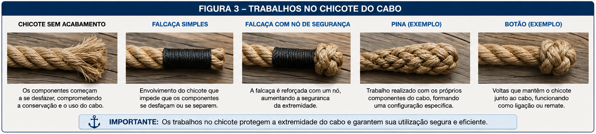
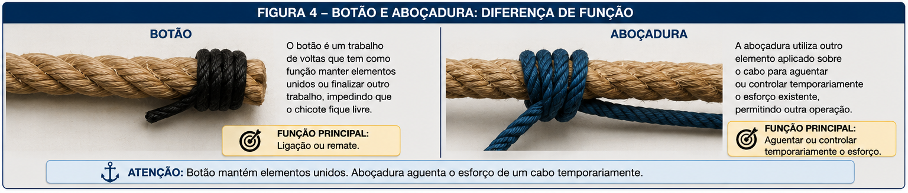
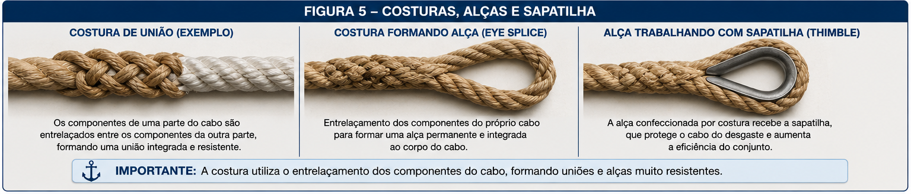

🪢 Trabalhos Marinheiros, Poleame e Aparelhos de Laborar
Seamanship, Blocks and Tackles
Estudo dos principais trabalhos executados pelo marinheiro com cabos, incluindo nós, voltas, costuras, alças, estropos e outros trabalhos utilizados nas fainas de bordo.
A aula também desenvolverá o estudo do poleame, dos aparelhos de laborar e de seus principais acessórios, relacionando sua constituição com a forma pela qual os esforços são transmitidos e multiplicados.
O objetivo não é apenas reconhecer a nomenclatura, mas compreender como cada elemento é empregado nas operações reais de bordo.
📊 Progresso da Aula
0% da aula concluída
📘 Identificação da aula
Disciplina: Arte Naval
Assunto: Trabalhos Marinheiros, Poleame e Aparelhos de Laborar
Termos técnicos principais: Seamanship, Blocks and Tackles
Nível: PSCPP
⏱ Cronômetro de Estudo
📖 Estudo
Estude com concentração durante o ciclo e utilize a pausa para descansar antes de iniciar uma nova sessão.
📋 Conteúdo programático
II — Arte Naval
Trabalhos Marinheiros, Poleame e Aparelhos de Laborar
- Trabalhos do marinheiro;
- nós e voltas;
- cabo solteiro, vivo, seio e chicote;
- volta singela e voltas redondas;
- influência dos trabalhos sobre a resistência dos cabos;
- falcaças, pinhas e trabalhos nos chicotes;
- botões e aboçaduras;
- costuras, alças e mãos;
- estropos;
- utensílios empregados nos trabalhos do marinheiro;
- poleame;
- poleame surdo;
- poleame de laborar;
- moitões, cadernais, patescas, polés e catarinas;
- aparelhos de laborar;
- teques e talhas;
- estralheiras;
- teoria dos aparelhos de laborar;
- esforço e rendimento dos aparelhos;
- acessórios dos aparelhos de laborar.
🎯 Objetivos de aprendizagem
Ao concluir esta aula, o aluno deverá ser capaz de:
- compreender o conceito de trabalhos do marinheiro;
- identificar as partes fundamentais de um cabo utilizadas na execução dos trabalhos marinheiros;
- distinguir nó, volta, volta singela e voltas redondas;
- reconhecer os principais nós e voltas apresentados na bibliografia;
- compreender a função das falcaças, costuras, alças, aboçaduras, botões e estropos;
- identificar os principais utensílios empregados nos trabalhos do marinheiro;
- diferenciar poleame surdo e poleame de laborar;
- reconhecer moitões, cadernais, patescas, polés e catarinas;
- compreender a constituição e o funcionamento dos aparelhos de laborar;
- distinguir teques, talhas e estralheiras;
- interpretar a distribuição dos esforços nos aparelhos de laborar;
- compreender os conceitos de potência e rendimento dos aparelhos;
- identificar os principais acessórios empregados com cabos e aparelhos;
- relacionar os conhecimentos de arte marinheira com sua aplicação nas fainas de bordo;
- familiarizar-se com os principais termos técnicos correspondentes em inglês marítimo.
📚 Publicações utilizadas
Arte Naval — Volume 1
Publicação principal utilizada para o desenvolvimento dos trabalhos do marinheiro, do poleame, dos aparelhos de laborar e de seus acessórios.
Autor: Maurílio Magalhães Fonseca.
Edição: 8ª edição, 2019.
Trechos principais utilizados nesta aula: Capítulo 8 — Trabalhos do Marinheiro e Capítulo 9 — Poleame, Aparelhos de Laborar e Acessórios.
Precisão bibliográfica
O desenvolvimento técnico desta aula seguirá prioritariamente as definições, classificações, nomenclaturas e relações apresentadas em Arte Naval — Volume 1.
Quando forem apresentados equivalentes em inglês marítimo que não constem expressamente da publicação, eles serão identificados apenas como vocabulário técnico complementar, sem substituir a terminologia utilizada pelo autor.
Assuntos próprios de amarração, fundeio e suspender não serão desenvolvidos nesta aula, mesmo quando algum dos trabalhos aqui estudados também possa aparecer nessas operações.
🗂 Organização da aula
- fundamentos dos trabalhos do marinheiro;
- nós e voltas;
- trabalhos nos chicotes e proteção dos cabos;
- costuras, alças, botões e aboçaduras;
- estropos e trabalhos auxiliares;
- utensílios do marinheiro;
- poleame e sua classificação;
- moitões, cadernais e demais tipos de poleame;
- aparelhos de laborar;
- teques, talhas e estralheiras;
- teoria, esforço e rendimento dos aparelhos;
- acessórios;
- aplicações operacionais;
- terminologia técnica em inglês marítimo;
- revisão e questões no padrão PSCPP.
PARTE 1 — FUNDAMENTOS DOS TRABALHOS DO MARINHEIRO
Os trabalhos executados com cabos constituem uma das bases tradicionais da atividade marinheira.
Antes de estudar individualmente nós, voltas, costuras, alças e demais trabalhos, é necessário compreender a nomenclatura empregada pelo Arte Naval — Volume 1 e a maneira pela qual um cabo é considerado durante sua utilização.
Esta primeira parte estabelece essa base conceitual.
1. Trabalhos do marinheiro
O Arte Naval denomina trabalhos do marinheiro ou obras do marinheiro os diferentes trabalhos de bordo pelos quais cabos e lonas são presos, emendados, fixados ou preparados para determinadas aplicações.
Trata-se, portanto, de um conjunto amplo de técnicas. Não se resume à execução de nós.
Entre os trabalhos relacionados pelo capítulo encontram-se:
- falcaças;
- nós;
- voltas;
- malhas;
- aboçaduras;
- botões;
- alças;
- mãos;
- estropos;
- costuras;
- pinhas;
- rabichos;
- gaxetas;
- coxins;
- redes.
Conceito fundamental
Trabalho do marinheiro é uma expressão abrangente.
Ela reúne diferentes maneiras de trabalhar, preparar, unir, prender ou adaptar cabos e outros materiais utilizados a bordo.
⚠ Atenção PSCPP
Não associe trabalhos do marinheiro exclusivamente a nós.
Os nós constituem apenas uma das diversas categorias de trabalhos compreendidas pelo assunto.
2. Nós e voltas
Nos trabalhos marinheiros, nós e voltas são executados por meio do entrelaçamento ou da disposição de partes do cabo, permitindo que ele seja empregado para diferentes fins.
O trabalho pode ser realizado utilizando o chicote ou o seio do cabo, conforme o tipo de trabalho executado.
Uma característica importante é que o trabalho deve permanecer seguro quando submetido ao esforço para o qual foi preparado.
Ao mesmo tempo, quando sua natureza assim permitir, deve ser possível desfazê-lo depois de cessado o esforço.
Princípio prático
Um trabalho marinheiro não é avaliado apenas pela aparência de sua execução.
É necessário considerar como ele se comporta quando o cabo recebe esforço.
⚠ Atenção PSCPP
Ao estudar cada nó ou volta nas próximas partes, observe sempre três aspectos:
- como é formado;
- para que finalidade é empregado;
- como se comporta quando submetido à tração.
3. Cabo solteiro: vivo, seio e chicote
Para compreender a execução dos trabalhos do marinheiro, o Arte Naval emprega uma nomenclatura fundamental para as diferentes partes de um cabo.
No estudo de um cabo solteiro, devem ser reconhecidos principalmente:
- vivo;
- seio;
- chicote.
Vivo
O vivo é a parte do cabo que está submetida ao esforço ou que trabalha depois que o cabo foi disposto para determinado serviço.
Seio
O seio corresponde à parte intermediária do cabo.
Essa parte pode ser utilizada diretamente na formação de diferentes trabalhos, sem que o chicote necessariamente tenha de passar completamente pelo trabalho.
Chicote
O chicote é a extremidade do cabo empregada na execução de diversos nós e voltas.
Memorização essencial
Vivo → parte que está trabalhando sob esforço.
Seio → parte intermediária do cabo.
Chicote → extremidade do cabo.
Figura 1 — Cabo solteiro e sua nomenclatura.
Nesta posição será inserida uma figura didática única, preferencialmente próxima da aparência real de um cabo utilizado a bordo, identificando simultaneamente vivo, seio e chicote.
A figura será produzida separadamente para evitar a inclusão de elementos visuais imprecisos antes de sua validação.
🌐 Vocabulário marítimo complementar
Os termos abaixo são apresentados apenas como apoio ao estudo do inglês marítimo e não como transcrição terminológica do Arte Naval.
- Standing part — parte do cabo correspondente, conforme o contexto, à porção que permanece trabalhando;
- Bight — seio formado no cabo;
- End / working end — extremidade utilizada durante a confecção de determinado trabalho.
⚓ Aplicação Operacional
A distinção entre vivo, seio e chicote é necessária para compreender corretamente as instruções de execução dos trabalhos apresentados nas seções seguintes.
Quando a publicação determina que uma operação seja realizada pelo chicote ou pelo seio, essas expressões identificam precisamente qual parte do cabo deverá ser manipulada.
4. Volta singela e voltas redondas
Outro conceito básico do capítulo é a forma como o cabo envolve determinado objeto.
Quando o cabo passa uma vez em torno do objeto, tem-se uma volta singela.
Quando são dadas duas ou mais voltas completas em torno do objeto, têm-se voltas redondas.
Diferença fundamental
Volta singela: uma volta em torno do objeto.
Voltas redondas: duas ou mais voltas em torno do objeto.
🌐 Vocabulário marítimo complementar
- Turn — volta do cabo em torno de um objeto;
- Round turn — volta redonda.
⚠ Atenção PSCPP
Aqui, singela e redonda caracterizam a maneira pela qual o cabo envolve o objeto.
Essa nomenclatura servirá de base para compreender vários trabalhos apresentados posteriormente.
5. Influência dos trabalhos sobre a resistência do cabo
Um aspecto particularmente importante apresentado pelo Arte Naval é que a execução de nós, voltas e costuras altera a forma pela qual os esforços são distribuídos pelos componentes do cabo.
Em um trecho reto submetido à tração, a distribuição do esforço ocorre de maneira mais regular.
Quando o cabo é curvado, dobrado ou entrelaçado, os diferentes fios e cordões deixam de receber exatamente a mesma parcela do esforço.
Como consequência, um cabo contendo determinado nó, volta ou costura não deve ser considerado tão resistente quanto o mesmo cabo sem esse trabalho.
Princípio fundamental
Nós, voltas e costuras podem reduzir a resistência efetiva do cabo.
A redução está relacionada às deformações e à distribuição desigual das tensões produzidas na região do trabalho.
⚠ Atenção PSCPP
O Arte Naval apresenta valores experimentais para comparar a resistência relativa de diferentes trabalhos.
Esses valores serão estudados juntamente com os respectivos nós, voltas e costuras, para evitar a simples memorização isolada de percentuais sem compreender qual trabalho está sendo comparado.
⚓ Aplicação Operacional
Conhecer a redução de resistência associada a determinado trabalho ajuda a compreender por que a escolha de um nó, volta ou costura não deve considerar somente a facilidade de execução.
O comportamento do cabo quando submetido à carga também faz parte da avaliação do trabalho.
6. Síntese dos fundamentos
Antes de avançar para o estudo individual dos trabalhos marinheiros, devem estar consolidados os seguintes conceitos:
- trabalhos do marinheiro constituem uma categoria ampla de trabalhos realizados com cabos, lonas e materiais empregados a bordo;
- nós e voltas representam apenas parte desse conjunto;
- o cabo deve ser analisado considerando vivo, seio e chicote;
- uma volta em torno de um objeto constitui uma volta singela;
- duas ou mais voltas constituem voltas redondas;
- a execução de nós, voltas e costuras pode reduzir a resistência efetiva do cabo.
Base para a próxima parte
A partir desses conceitos, podemos estudar individualmente os nós e voltas apresentados pelo Arte Naval, observando sua forma, finalidade e comportamento sob esforço.
PARTE 2 — NÓS E VOLTAS FUNDAMENTAIS
Compreendida a terminologia básica dos cabos, podemos iniciar o estudo dos nós e voltas apresentados pelo Arte Naval — Volume 1.
A publicação não apresenta esses trabalhos apenas como formas geométricas. Cada um possui características próprias quanto à maneira de execução, finalidade, segurança e comportamento quando submetido a esforço.
Nesta parte serão estudados alguns dos trabalhos mais importantes para a compreensão da arte marinheira: meia-volta, volta de fiador, cote, volta de fiel, volta da ribeira, volta de fateixa, lais de guia, nó direito e nós de escota.
7. Meia-volta
A meia-volta é uma volta simples executada com o chicote do cabo.
Segundo o Arte Naval, ela pode ser dada em torno de um objeto, embora essa forma tenha pouca utilização a bordo.
Também pode ser executada no próprio cabo. Nesse caso, quando aplicada em cabo fino, pode ser utilizada para evitar que o chicote desgurna de um gorne ou para impedir que ele descochar.
Sua principal importância está em funcionar como base ou parte constituinte de diversos outros nós.
Função principal
A meia-volta deve ser entendida principalmente como um elemento básico para a formação de outros trabalhos.
⚠ Atenção PSCPP
O Arte Naval alerta que uma meia-volta pode surgir espontaneamente em um cabo solteiro mal acondicionado.
Nesse caso, deve ser desfeita antes que fique apertada, pois depois de rondada pode tornar-se difícil de abrir.
A publicação também atribui à meia-volta uma resistência aproximada de apenas 45% da resistência do próprio cabo, nas condições experimentais apresentadas no capítulo.
🌐 Vocabulário marítimo complementar
- Half hitch — termo empregado em inglês para uma meia-volta em determinados contextos;
- Working end — chicote utilizado para executar o trabalho.
8. Volta de fiador
A volta de fiador possui uma configuração que lembra o número oito.
Uma de suas aplicações mencionadas pelo Arte Naval é no chicote do tirador de uma talha, para evitar que ele desgurna.
Para essa finalidade, a publicação considera a volta de fiador superior à meia-volta, pois não fica mordida com a mesma facilidade e pode ser desfeita mais facilmente.
Característica
A volta de fiador forma um trabalho simétrico e de desenho simples.
Sua aplicação prática é considerada restrita pelo Arte Naval, embora também seja empregada como nó ornamental.
⚓ Aplicação Operacional
Sua aplicação no chicote de um tirador mostra uma função importante dos trabalhos marinheiros: impedir que um cabo escape de determinado percurso ou equipamento.
9. Cote
O cote é definido pelo Arte Naval como uma volta singela em que uma das partes do cabo morde a outra.
É raramente empregado isoladamente. Sua importância está principalmente em servir como elemento de remate de outras voltas.
Quando utilizado sozinho, pode prender momentaneamente o chicote de um cabo que não deverá sofrer esforço e que tenha diâmetro moderado.
Conceito para memorizar
Cote = volta singela na qual uma parte do cabo morde a outra.
⚠ Atenção PSCPP
O cote aparece repetidamente na formação de outros trabalhos.
Portanto, compreender sua configuração é mais importante do que estudá-lo como um nó isolado.
10. Volta de fiel
Volta de fiel singela
A volta de fiel singela é constituída por dois cotes dados um contra o outro, de maneira que os chicotes saiam entre eles em sentidos contrários.
O Arte Naval a caracteriza como a volta mais usada a bordo para passar um fiel ou uma adriça em torno de elementos como:
- balaústre;
- olhal;
- pé-de-carneiro.
Também pode ser utilizada para amarrar um cabo fino em torno de outro mais grosso.
Condição importante
Segundo a publicação, a volta de fiel deve ser empregada onde a tensão do cabo seja constante.
Em outras situações, deve ser rematada com um cote ou um botão.
Volta de fiel dobrada
A volta de fiel dobrada começa e termina de forma semelhante à volta de fiel singela, mas possui uma volta adicional entre o primeiro e o último cote.
Nessa configuração, o primeiro cote fica mordido com uma volta redonda.
O Arte Naval destaca como importante característica o fato de essa volta não recorrer.
Por essa razão, pode ser empregada para aguentar um cabo em torno de outro mais grosso ou de um pé-de-carneiro.
⚠ Atenção PSCPP
Observe a diferença:
- volta de fiel singela — deve ser preferencialmente utilizada onde a tensão seja constante;
- volta de fiel dobrada — possui maior segurança contra o recorrer.
Na tabela experimental apresentada no capítulo, a volta de fiel possui resistência aproximada de 60% da resistência do cabo.
11. Volta singela e cotes / volta redonda e cotes
O Arte Naval apresenta combinações em que um, dois ou mais cotes são utilizados para rematar uma volta singela ou uma volta redonda.
Se for empregado apenas um cote, o chicote deverá ser abotoado.
A volta com dois cotes apresenta maior segurança, mas a publicação observa que também pode recorrer caso o chicote não seja adequadamente abotoado.
Regra de execução
Os dois cotes devem ser dados no mesmo sentido.
Entre as aplicações mencionadas estão aguentar um cabo:
- ao anete de um ancorote;
- à boça de uma embarcação;
- ao arganéu de uma boia.
A volta redonda e dois cotes também pode ser utilizada para aguentar uma espia em um cabeço, observadas as precauções indicadas pela publicação.
⚓ Aplicação Operacional
Aqui já aparece claramente a combinação de dois princípios estudados na Parte 1:
volta em torno do objeto + cote utilizado como remate.
12. Volta da ribeira
Na volta da ribeira, dá-se inicialmente uma volta em torno do objeto e depois um cote, enleando o chicote em torno do próprio cabo.
O Arte Naval indica seu emprego para amarrar:
- mastros;
- antenas;
- de modo geral, objetos leves.
Volta da ribeira e cote
Existe também a volta da ribeira e cote.
Ela serve aos mesmos fins, mas o cote adicional proporciona maior segurança, pois o objeto fica preso por duas partes.
A publicação cita como aplicação o emprego para segurar um madeiro que esteja sendo rebocado.
⚠ Atenção PSCPP
Não confunda:
Volta da ribeira e volta da ribeira e cote são trabalhos distintos.
Na tabela experimental do capítulo, a volta da ribeira aparece no grupo com resistência aproximada de 70 a 65% da resistência do cabo.
13. Volta de fateixa
A volta de fateixa é executada inicialmente com uma volta redonda.
Em seguida, o chicote passa com um cote por dentro dessa volta redonda.
O chicote deve ser rematado:
- por um botão; ou
- por um segundo cote.
Entre suas aplicações, o Arte Naval menciona:
- amarrar uma espia a um ancorote;
- amarrar um fiel a um balde.
Construção lógica
A volta de fateixa combina:
volta redonda + cote + remate do chicote.
⚠ Atenção PSCPP
Na tabela experimental apresentada pelo Arte Naval, a volta de fateixa conserva aproximadamente 76% da resistência do próprio cabo.
Entre os nós e voltas relacionados naquela tabela, é um valor relativamente elevado.
14. Lais de guia
O Arte Naval denomina o lais de guia como o “rei dos nós”, destacando sua ampla utilização a bordo.
Uma de suas principais características é poder ser dado com rapidez e não recorrer.
Sua finalidade fundamental é formar uma alça ou bolso de tamanho determinado que não corre como um laço.
Essa propriedade permite utilizá-lo, entre outras aplicações, para formar uma alça temporária em uma espia.
Característica essencial
O lais de guia forma uma alça que não corre.
Essa característica é central para distinguir seu funcionamento de um laço corrediço.
Balso singelo
O Arte Naval define balso como o seio ou a alça resultante de um lais de guia.
Quando o lais de guia é dado no próprio cabo formando apenas um seio, tem-se o balso singelo.
⚓ Aplicação Operacional
A publicação cita como aplicação importante a amarração temporária de pequenas embarcações ao arganéu de uma boia.
O chicote é passado pelo arganéu e o lais de guia é confeccionado no seio do cabo, permitindo posteriormente que o trabalho seja desfeito pelo pessoal de bordo.
⚠ Atenção PSCPP
Na tabela experimental do capítulo, o lais de guia apresenta resistência aproximada de 60% da resistência do cabo.
Não confunda essa resistência relativa com a capacidade nominal de carga de um cabo específico.
🌐 Vocabulário marítimo complementar
- Bowline — lais de guia;
- Loop — alça;
- Bight — seio.
15. Identificação visual dos principais trabalhos
Figura 2 — Nós e voltas fundamentais.
Nesta posição será inserida uma única imagem composta, com aparência próxima de cabos reais, reunindo lado a lado:
- meia-volta;
- volta de fiador;
- cote;
- volta de fiel singela;
- volta de fiel dobrada;
- volta da ribeira;
- volta de fateixa;
- lais de guia.
Cada trabalho deverá aparecer isolado sobre fundo simples, com o vivo, seio e chicote identificados apenas onde isso ajudar na compreensão da execução.
Objetivo da figura
A finalidade não será ensinar os trabalhos apenas pela aparência, mas permitir uma comparação visual direta entre suas estruturas.
16. Nó direito
O nó direito é apresentado pelo Arte Naval como um método tradicional para unir dois chicotes ou dois cordões.
Uma de suas características é não recorrer.
Entretanto, quando submetido a esforço e rondado, pode tornar-se muito difícil de desfazer.
Por essa razão, a publicação restringe sua utilização principalmente à ligação pelos chicotes de cabos finos que não demandem força ou ao término de determinada amarração definitiva.
⚠ Limitações importantes
O Arte Naval faz duas advertências particularmente importantes:
- o nó direito pode desfazer-se quando os cabos são de tamanhos ou materiais diferentes;
- nunca deve ser empregado para unir cabos que trabalhem em aparelhos de laborar ou para emendar espias.
Pegadinha clássica
Nó direito não é um nó adequado para emendar espias.
Nó torto
O nó torto se parece visualmente com o nó direito, mas suas duas meias-voltas são realizadas no mesmo sentido.
O Arte Naval afirma que ele não é usado a bordo porque recorre.
⚠ Atenção PSCPP
A diferença entre nó direito e nó torto é pequena visualmente, mas operacionalmente importante.
Na tabela experimental do capítulo, o nó direito possui resistência aproximada de apenas 45% da resistência do cabo.
🌐 Vocabulário marítimo complementar
- Reef knot / square knot — nó direito;
- Granny knot — denominação inglesa associada ao nó torto.
17. Nós de escota
Nó de escota singelo
O nó de escota singelo é utilizado para unir dois cabos pelos chicotes ou para unir um chicote a um olhal, mão ou alça.
O Arte Naval destaca que pode ser aplicado a diferentes tipos de cabos, sendo particularmente útil:
- na união de cabos finos;
- na união de cabos de bitolas diferentes.
A publicação cita ainda, entre outras utilizações, a ligação de uma adriça sem gato a uma bandeira.
Nó de escota dobrado
O nó de escota dobrado é uma variação do nó anterior.
A diferença fundamental é que o chicote realiza uma volta redonda em vez de uma volta singela, proporcionando maior segurança.
É indicado pelo Arte Naval para emendar duas espias, especialmente:
- quando uma delas possui alça;
- quando apresentam tamanhos diferentes.
Quando as espias possuem grossuras diferentes, a espia de maior grossura forma a alça.
Comparação importante
Nó direito: não deve ser utilizado para emenda de espias.
Nó de escota dobrado: pode ser empregado para emendar espias, inclusive de tamanhos diferentes, nas condições descritas pela publicação.
Nó de escota de rosa
O nó de escota de rosa também é apresentado pelo Arte Naval para a união de cabos de bitolas diferentes.
⚠ Atenção PSCPP
Na tabela experimental apresentada no capítulo, o nó de escota possui resistência aproximada de 55% da resistência do cabo.
Mais importante do que decorar isoladamente esse percentual é compreender qual tipo de união cada trabalho permite.
🌐 Vocabulário marítimo complementar
- Sheet bend — nó de escota;
- Double sheet bend — nó de escota dobrado.
18. Comparação dos principais trabalhos
| Trabalho | Característica principal | Aplicação destacada |
|---|---|---|
| Meia-volta | Base de vários nós | Remate e formação de outros trabalhos |
| Volta de fiador | Forma semelhante a um oito | Evitar desgurnimento de tiradores |
| Cote | Uma parte do cabo morde a outra | Rematar outras voltas |
| Volta de fiel | Dois cotes contrapostos | Prender fiel ou adriça a objetos fixos |
| Volta da ribeira | Volta e cote sobre o próprio cabo | Prender objetos leves |
| Volta de fateixa | Volta redonda + cote | Espia em ancorote |
| Lais de guia | Forma alça que não corre | Alça temporária |
| Nó direito | Une dois chicotes | Cabos finos sem grande esforço |
| Nó de escota | Permite unir cabos pelos chicotes | Cabos finos ou de bitolas diferentes |
⚠ Pontos de atenção para o PSCPP
- a volta de fiel singela é indicada onde a tensão seja constante;
- a volta de fiel dobrada apresenta maior segurança contra recorrer;
- o lais de guia forma uma alça que não corre;
- o nó torto recorre e não é usado a bordo;
- o nó direito não deve ser utilizado para emenda de espias;
- o nó de escota pode ser utilizado com cabos de bitolas diferentes;
- no nó de escota dobrado, quando houver diferença de grossura, a espia de maior grossura forma a alça.
PARTE 3 — TRABALHOS NOS CABOS
Além dos nós e voltas, a arte marinheira compreende diversos trabalhos destinados a preparar, proteger, unir ou adaptar os cabos para os diferentes serviços de bordo.
Nesta parte serão estudados principalmente falcaças, pinhas, botões, aboçaduras, costuras e alças, mantendo a nomenclatura e a organização apresentadas pelo Arte Naval — Volume 1.
Esses trabalhos possuem funções diferentes. Alguns protegem o chicote do cabo, outros unem partes do próprio cabo e outros permitem criar elementos adequados para sua utilização prática.
19. Falcaças
A falcaça é um trabalho executado no chicote de um cabo com a finalidade de impedir que seus componentes se desfaçam ou se separem.
Sua função está diretamente relacionada à conservação da extremidade do cabo, mantendo reunidos os elementos que o constituem.
Função essencial
A falcaça é um trabalho de acabamento e proteção do chicote.
Ela impede que a extremidade do cabo se desfaça progressivamente.

Figura 3. Comparação visual dos principais trabalhos realizados no chicote do cabo.
⚓ Aplicação Operacional
Um chicote sem acabamento pode começar a se desfazer durante o manuseio, prejudicando tanto sua conservação quanto sua utilização.
A falcaça mantém a extremidade organizada e preparada para o serviço.
🌐 Vocabulário marítimo complementar
- Whipping — falcaça;
- Rope end — extremidade do cabo.
20. Pinhas
As pinhas constituem trabalhos realizados principalmente com os cordões ou fios de um cabo, formando configurações próprias na sua extremidade.
O Arte Naval apresenta diferentes tipos de pinhas, cuja construção varia conforme a disposição e o entrelaçamento de seus componentes.
Além de determinadas aplicações práticas, as pinhas também aparecem entre os trabalhos tradicionais da arte marinheira.
Identificação
Enquanto a falcaça envolve e mantém reunidos os componentes do chicote, a pinha resulta de um trabalho executado com os próprios componentes do cabo.
⚠ Atenção PSCPP
Não trate falcaça e pinha como sinônimos.
São trabalhos diferentes, tanto em sua constituição quanto na maneira pela qual são executados.
21. Botões
O botão é outro trabalho tradicional empregado para manter juntas determinadas partes de cabos ou elementos utilizados nas fainas de bordo.
Sua função geral é realizar uma ligação ou manter elementos unidos por meio de voltas executadas com material apropriado.
Ao estudar os diferentes tipos apresentados pelo Arte Naval, é importante observar o que está sendo unido e como o botão é disposto.
Relação com os trabalhos anteriores
Nas voltas estudadas na Parte 2, o próprio Arte Naval já mostrou situações nas quais o chicote deve ser abotoado.
Portanto, o botão não constitui apenas um trabalho isolado: ele também pode funcionar como remate e segurança de outros trabalhos.
⚓ Aplicação Operacional
Quando uma volta exige que o chicote seja mantido junto ao vivo, o botão pode impedir que essa extremidade fique livre e comprometa o trabalho.
22. Aboçaduras
As aboçaduras fazem parte dos trabalhos do marinheiro apresentados pelo Arte Naval.
O princípio do trabalho está relacionado a prender ou aguentar um cabo por meio de outro elemento disposto sobre ele.
A importância operacional desse conceito aparece quando é necessário controlar ou sustentar temporariamente o esforço existente em um cabo para permitir outra operação.
Ideia operacional
A aboçadura permite estabelecer uma ligação temporária com um cabo para auxiliar no controle do esforço.

Figura 4. Comparação entre botão e aboçadura, destacando a diferença entre manter elementos unidos e aguentar temporariamente um cabo.
⚠ Atenção PSCPP
Aboçadura não deve ser entendida simplesmente como outro nome para nó ou volta.
Sua função deve ser relacionada ao controle ou transferência temporária do esforço de um cabo.
23. Costuras
A costura é um trabalho realizado por meio do entrelaçamento dos componentes do próprio cabo.
Diferentemente de um nó, a união não depende simplesmente de apertar duas partes do cabo uma contra a outra.
Os componentes são trabalhados e passados entre os componentes da outra parte, produzindo uma união integrada à própria estrutura do cabo.
Diferença fundamental
Nó: a união resulta principalmente do entrelaçamento e aperto das partes do cabo.
Costura: os componentes do cabo são entrelaçados entre si.
O Arte Naval apresenta diferentes formas de costura, empregadas conforme o trabalho desejado.
Entre elas encontram-se trabalhos destinados a unir cabos e trabalhos destinados a formar alças.
⚠ Atenção PSCPP
A Parte 1 já mostrou um princípio importante: uma costura também altera a distribuição dos esforços no cabo.
Entretanto, o Arte Naval apresenta determinadas costuras com resistência relativa superior à de vários nós e voltas.
Essa comparação será retomada quando consolidarmos os valores experimentais apresentados pela publicação.
24. Alças e mãos
Diversos serviços de bordo exigem que a extremidade de um cabo possua uma alça permanente.
Essa configuração pode ser obtida por meio de trabalho realizado com os próprios componentes do cabo.
A formação da alça permite que o cabo seja aplicado a elementos adequados ao serviço para o qual foi preparado.
Não confundir
O lais de guia, estudado anteriormente, forma uma alça por meio de um nó.
Uma alça confeccionada por costura é formada pelo entrelaçamento dos componentes do próprio cabo.

Figura 5. Principais conceitos de costura: união de cabos, formação de alça e alça trabalhando com sapatilha.
⚓ Aplicação Operacional
A escolha entre uma alça temporária formada por um nó e uma alça permanente confeccionada no próprio cabo depende da finalidade do conjunto.
Por isso, o reconhecimento visual desses trabalhos é particularmente importante na inspeção de cabos e equipamentos de bordo.
🌐 Vocabulário marítimo complementar
- Splice — costura;
- Eye — alça;
- Eye splice — alça confeccionada por costura;
- Thimble — sapatilha, elemento que será estudado posteriormente entre os acessórios.
25. Comparação dos trabalhos nos cabos
| Trabalho | Princípio | Função principal |
|---|---|---|
| Falcaça | Envolvimento do chicote | Evitar que a extremidade se desfaça |
| Pinha | Trabalho com componentes do cabo | Formar trabalho específico no chicote |
| Botão | Voltas mantendo elementos unidos | Ligação ou remate |
| Aboçadura | Elemento aplicado sobre outro cabo | Aguentar ou controlar temporariamente o esforço |
| Costura | Entrelaçamento dos componentes | Unir cabos ou formar outros trabalhos |
| Alça por costura | Entrelaçamento do cabo sobre ele próprio | Produzir uma alça integrada ao cabo |
⚠ Atenção PSCPP
Uma questão pode apresentar trabalhos visualmente semelhantes e perguntar sua finalidade.
Por isso, a preparação para a prova não deve depender somente da memorização da aparência. É necessário relacionar:
estrutura → finalidade → aplicação.
26. Síntese dos trabalhos nos cabos
- a falcaça protege e mantém organizado o chicote do cabo;
- as pinhas são trabalhos executados com os componentes do cabo;
- os botões podem manter partes unidas e servir de remate;
- as aboçaduras permitem aguentar ou controlar temporariamente um cabo;
- as costuras utilizam o entrelaçamento dos componentes do próprio cabo;
- uma costura pode ser utilizada para formar uma alça;
- uma alça formada por costura não deve ser confundida com a alça temporária formada por um lais de guia.
Próxima etapa
Compreendidos os principais trabalhos executados diretamente nos cabos, o estudo seguirá para estropos, trabalhos auxiliares e utensílios do marinheiro.